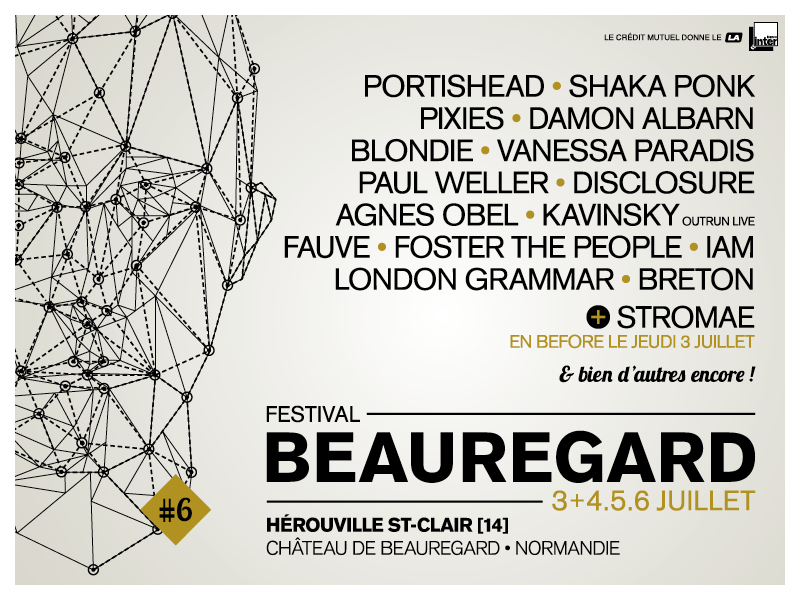

Normandie - Une terre de culture
Normandie - Une terre de culturePrésentation
La première édition du Festival Beauregard a eu lieu en 2009 sous l'impulsion de Paul Langeois, qui gère la salle de musique actuelle hérouvillaise du Big Band Café et de Patrick Simon gérant de l'agence de communication Kafé Crème. Aidé et soutenu par la municipalité d'Hérouville-Saint-Clair, la première édition réunit 20 000 spectateurs. L'agglomération caennaise n'avait qu'un seul festival de musiques actuelles, le Nordik Impakt consacré aux musiques électroniques. Pour populariser le festival et personnifier toute l'organisation de celui-ci, le personnage fictif de John Beauregard a été créé. Il est présent sur les affiches des trois éditions qui se sont déroulées jusqu'alors et est également utilisé à des fins marketing. Le festival Beauregard se déroule, comme son nom l'indique, sur le Domaine de Beauregard, appartenant à la municipalité d'Hérouville-Saint-Clair. Le domaine se compose d'un parc de 23 hectares de prairies et surfaces boisées situé au pied d'un château. Le site est agrandi en 2011. La scène 1 est dotée d'écrans géants cette même année. En 2012, les deux scènes du festival sont pourvues d'écrans géants. Un camping, situé à 5 km du site et desservi par une navette, assure l'hébergement pour les festivaliers les 4 premières années. Depuis 2013, il est à 10 min à pied sur le Stade de RENAULT Truck. dans les Rond-Pont après le pont. Le 15 novembre 2013, l'organisation du festival dévoile les dates de l'édition 2014 : les 4, 5 et 6 juillet. Le premier nom de la programmation est Pixies. Il a été donné via les réseaux sociaux le 4 décembre. Deux nouveaux noms sont dévoilés le 19 décembre : Blondie et Fauve.
Edition 2014
Le 28 janvier 2014, l'organisation surprend en programmant Stromae dans un Before Beauregard le 3 juillet 2014. Cette annonce a fait polémique auprès des fans du festival qui avaient acheté leur pass sans connaître la programmation puisqu'il faut rajouter 35€ (26€ pour les possesseurs d'un pass 3 jours) pour accéder au Before. London Grammar, The John Butler Trio et Madness sont annoncés le 4 février mais ce dernier annonce ne pas être au courant de leur venue en France et déprogramme leur concert à Beauregard le 11 mars. La programmation complète est dévoilée le 18 mars. Vendredi 4 : MmMmM, Cats on Trees, The Dillinger Escape Plan, Midlake, London Grammar, Blondie, IAM, Shaka Ponk, Kavinsky et Disclosur Samedi 5 : Samba de la Muerte, Be Quiet, Zone Libre Extended, We Have Band, Foster the People, Angus & Julia Stone, Vanessa Paradis, Portishead, Fauve, Gesaffelstein. Dimanche 6 : Portier Dean, Seasick Steve, Yodelice, Agnes Obel, Breton, Damon Albarn, The John Butler Trio, Pixies. Édition 2013 Vendredi 5 : Matthieu Chedid, Wax Tailor and the Dusty Rainbow Experience, Alt-J, The Jon Spencer Blues Explosion, New Order, Local Natives, The Vaccines, Bow Low, Half Moon Run Samedi 6 : The Smashing Pumpkins, Vitalic VTLZR, Miles Kane, Bat For Lashes, Bloc Party, The Lumineers, Jake Bugg, The Maccabees, Oxmo Puccino, Rover, Gablé Dimanche 7 : Nick Cave and the Bad Seeds, C2C, Dead Can Dance, Skip the Use, The Hives, Benjamin Biolay, Olivia Ruiz, Balthazar, Juveniles, Fakear
Édition 2012
Franz Ferdinand L'édition 2012 s'est déroulée comme la précédente sur trois jours, les 6, 7 et 8 juillet. Les premiers noms de la programmation tombent fin décembre 2011 et début janvier 2012 : Franz Ferdinand, Metronomy, Pony Pony Run Run, Selah Sue et Izia. La venue de Gossip, déjà présent lors de la première édition en 2009 est annoncée le 7 février 2012. Le 29 février, The Kills et Thomas Dutronc viennent s'ajouter à la programmation. Le reste des noms seront annoncés le 20 mars. SFR Live concerts retransmet en direct certains concerts de l'édition de 2012. Vendredi 6 : Olivier Depardon, The Lanskies, Miossec, Killing Joke, Selah Sue, Dionysos, Shaka Ponk, The Kills, Superpoze (remplace le groupe Hot Chip), Metronomy. Samedi 7 : Léa Solex, Other lives, Dominique A, Izïa, Kaiser Chiefs, Tindersticks, Jean-Louis Aubert, Sébastien Tellier, Gossip, Orelsan, The Bloody Beetroots. Dimanche 8 : The Aerial, Death in Vegas, Thomas Dutronc, Brigitte, Garbage, Camille, Franz Ferdinand, Pony Pony Run Run, Paul Kalkbrenner. Fréquentation : 55 444 festivaliers.

Edition 2011
Édition 2011 La direction du festival annonce dès le quatrième trimestre 2010 que la troisième édition se déroulera sur trois jours, les 1er, 2 et 3 juillet. 33 groupes et artistes seront ainsi présents et l'installation de trois écrans géants est prévue. Une extension du site est également annoncée. Le premier groupe programmé a été plébiscité par les internautes : en effet, le site du festival proposait aux festivaliers de voter parmi des artistes régionaux s'étant produits l'année passée pour leur permettre de jouer à nouveau lors de cette édition. Ils avaient donc le choix entre : 64 Dollar Question, I Arkle, Kim Novak, Pop The Fish et Long Time To Lay A Track. C'est Pop The Fish qui a été plébiscité par les internautes et qui rejouera cette année à Beauregard. L'année précédente ce système avait déjà été mis en place et avait permis au groupe Tremore de participer de nouveau au festival. Le groupe Jesus Christ Fashion Barbe, vainqueur du tremplin AÖC organisé par la salle des musiques actuelles de Caen Le Cargö, sera également de la partie. La programmation complète a été dévoilée en grande partie le 15 mars 2011. Vendredi 1 : Pop the fish, Groupe Les Déferlantes (association avec le festival Les Déferlantes d'Argelès-sur-mer), Gaëtan Roussel, Katerine, Kasabian, dEUS, Motörhead, Two Door Cinema Club, Birdy Nam Nam Samedi 2 : The Repeaters, Jesus Christ Fashion Barbe, demi-finale du championnat de France de Air Guitar, Agnes Obel, Herman Dune, Morcheeba, Cold War Kids, AaRON, Concrete Knives, ZZ Top, Stromae, Da Brasilians Dimanche 3 : Groupe Musilac (association avec le festival Musilac), Anna Calvi, Eels, The Ting Tings, Keziah Jones, The Kooks, Patrice, Archive, finale du championnat de France de Air Guitar, Zazie Fréquentation : 50 000 festivaliers.
Edition 2010
Elle a eu lieu du 2 au 3 juillet 2010. Le festival a accueilli les artistes suivants : Vendredi 2 : Iggy Pop & the Stooges, Phoenix, Ghinzu, The XX, Rodrigo y Gabriela, Yuksek, Féloche, Luke, Tremore, Kim Novak, 64 Dollar Question, Local natives Samedi 3 : Mika, La Roux, Damien Saez, Tété, Brigitte Fontaine, Nouvelle Vague, Le peuple de l'herbe, Long Time to Lay a Track, Friendly Fires, I Arkle, Editors, Pop the fish Fréquentation : 37 000 festivaliers Elle a eu lieu du 3 au 4 juillet 2009. Ont été programmés : Vendredi 3 : Pete Doherty, Dub Inc., Cocoon, Charlie Winston, Arthur H, Editors, Mogwai, Hugh Coltman, Tremore, Porcelain, The Dodoz, Tahiti 80, Peter Digital Orchestra Samedi 4 : The Virgins, Ayọ, Jason Mraz, The Gossip, BB Brunes, Guns of Brixton, Karkwa, Cornflakes Heroes, The Lanskies, Red, Lilea Narrative, Où E Zoé Fréquentation : 20 000 festivaliers.